교통기사 (2006-05-14 기출문제)
1과목: 교통계획
1. 내부수익률(IRR)의 특징에 대한 설명 중 옳지 않은 것은?
- 사업의 수익성을 측정할 수 있다.
- 평가과정과 결과를 이해하기 쉽다.
- 다른 대안과 비교하기 쉽다.
- 사업의 절대적인 규모를 고려할 수 있다.
(정답률: 알수없음)

2. 도시철도역의 승강장 형태 중 섬식(Island) 승강장과 비교한 상대식(Lateral) 승강장의 특징에 대한 설명으로 옳은 것은?
- 전체적으로 승강장의 폭이 좁다.
- 사용자의 열차 방향에 대한 혼란을 야기시킬 가능성이 있다.
- 승강장 입구부에 S자형 선형으로 인한 넓은 터널 폭이 필요하다.
- 승강장에 대한 감시, 감독비용이 높다.
(정답률: 알수없음)
3. 다음의 ()안에 들어갈 말로 알맞은 것은?
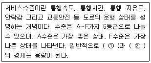
- ①B수준 ②C수준
- ①C수준 ②D수준
- ①D수준 ②E수준
- ①E수준 ②F수준
(정답률: 알수없음)
4. 교통량 배정의 목적으로 적합하지 않는 것은?
- 현재와 장래의 교통망의 문제지점을 진단
- 교통망 대안의 평가
- 교통시설의 건설 우선순위 결정
- OD 통행량 산출을 위한 기초 자료제공
(정답률: 64%)
5. 통행분포(trip distribution)단계에서 사용되는 모형으로 Fratar법의 계산과정을 단순화시킨 것은?
- 성장인자모형
- 중력모형
- 디트로이트법
- 엔트로피법
(정답률: 알수없음)
6. 일방통행의 장ㆍ단점에 대한 설명 중 옳지 않은 것은?
- 통행거리 증대
- 교통사고 감소
- 상충교통류 증가
- 교통표지판 설치증가
(정답률: 알수없음)
7. 교통수요 예측방법인 과거추세 연장법에 대한 설명으로 틀린 것은?
- 과거의 자료를 그대로 이용하기 때문에 분석이 간단하다.
- 수요에 미치는 영향을 변수에 내재시킬 수 없는 단점이 있다.
- 짧은 시간에 가능하다.
- 과거의 추세에 의해 추정되기 때문에 수요예측이 분석기마다 동일하다.
(정답률: 92%)
8. 모집단의 개체가 똑같은 확률로 뽑혀 지도록 표본단위를 모집단에서 추출하는 방법은?
- 단순확률 표본 설계
- 층화확률 표본 설계
- 집락확률 표본 설계
- 비 확률 표본 설계
(정답률: 100%)
9. 교통계획을 계획기간에 따라 장기교통계획과 단기교통계획으로 구분할 때 다음 설명 중 옳은 것은?
- 장기교통계획은 시설 지향적이고 단교통 계획은 서비스 지향적이다.
- 장기교통계획은 서로 다른 대안이고 단기교통계획은 유사한 대안이다.
- 장기교통계획은 저 자본 비용이고 단기교통계획은 자본집약적이다.
- 장기교통계획은 많은 교통수단을 동시에 고려하고 단기교통계획은 단일교통 수단 위주이다.
(정답률: 알수없음)
10. 교통비용과 교통량의 관계를 나타내는 수요곡선이 그림과 같을 때 기존 시설에 의한 교통비용은 C1, 교통량은 Q1이고 교통시설을 개선한 후의 교통비용은 C2, 교통량이 Q2일 때 증가 되는 소비자 잉여분(Consumer's Surplus)은? (보기항의 빗금 친 부분-소비자 잉여분)
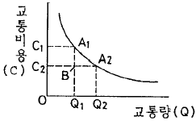
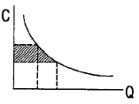
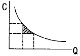
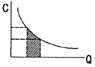
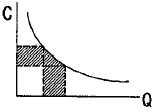
(정답률: 알수없음)
11. 통행실태조사 기법 중 차량번호판(License Plate) 조사에 관한 설명으로 맞는 것은?
- 조사가 필요한 지역이 넓은 경우에 적절한 형태의 조사 기법이다.
- 조사 지점의 거리를 가능한 멀리해야 보다 정확한 기종점 정보의 수집이 가능하다.
- 차량을 정지시켜야 하기 때문에 안전상의 위험이 많다.
- 각 차량이 처음 관측된 곳을 기점으로, 마지막으로 관측된 곳을 종점으로 간주한다.
(정답률: 알수없음)
12. 도로구간의 속도를 허용오차 2km/h의 수준으로 조사하기 위한 표본 수를 결정하고자 한다. 유사한 도로(모집단)의 속도 표준편차가 10km/h로 나타나 있으며, 95%의 신뢰도에 대응한 표준화 변수 1.96을 이용하면 최소한 몇 대 이상의 차량속도를 조사해야 하는가?
- 64대
- 97대
- 48대
- 76대
(정답률: 알수없음)
13. 다음 보기 중 지방부 양방향 2차로 도로의 서비스 수준 분석을 위해 필요한 조사 자료는?
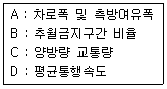
- A, B, C
- A, B, D
- A, C, D
- B, C, D
(정답률: 70%)
14. 사업의 경제성을 가늠하는 척도 중 하나인 순 현재가치에 대한 설명으로 옳은 것은?
- 현재가치로 환산된 장래의 연도별 편익의 합계에서 현재가치로 환산된 장래의 연도별 비용의 합계를 뺀 값이다.
- 현재가치로 환산된 장래의 연도별 편익의 합계와 현재가치로 환산된 장래의 연도별 비용의 합계를 합한 값이다.
- 현재가치로 환산된 장래의 연도별 편익의 합계와 현재가치로 환산된 장래의 연도별 비용의 합계를 나눈 값이다.
- 현재가치로 환산된 장래의 연도별 비용의 합계와 현재가치로 환산된 장래의 연도별 편익의 합계를 나눈 값이다.
(정답률: 알수없음)
15. 다음 중 타 교통수단과 통행로를 공유하고 있는 버스시스템에 버스 우선기법을 도입할 시 아타날 수 있는 효과와 가장 관계가 먼 것은?
- 시설 비용 감소
- 정시성 확보
- 신속성 증가
- 운행 비용 감소
(정답률: 알수없음)
16. 다음 중 가구통행실태조사의 일반적인 항목으로 적합하지 않은 것은?
- 출발시간
- 통행목적
- 환승여부
- 통행경로
(정답률: 알수없음)
17. 다음 중 일반적인 교통계획 4단계의 순서가 옳게 나열된 것은?
- 통행분포(trip distribution)-통행발생-수단선택-노선선정
- 통행분포(trip distribution)-통행발생-노선선정-수단선택
- 통행발생-통행분포(trip distribution)-수단선택-노선선정
- 통행발생-통행분포(trip distribution)-노선선정-수단선택
(정답률: 73%)
18. 도로 설계의 기본이 되는 장래 교통량으로, 설계 대상 구간을 지날 것으로 예상되는 1시간 교통량으로 주어지는 연평균교통량(AADT)에 설계시간 계수(K)를 곱하여 산출하는 것은?
- 계획 교통량
- 설계시간 교통량
- 최대 서비스 교통량
- 1시간 환산 교통량
(정답률: 91%)
19. 버스운영체계 중 공동배차제의 유형에 속하지 않는 것은?
- 수입금 공동관리제
- 차량 공동관리제
- 노선 공동관리제
- 운전자 공동관리제
(정답률: 82%)
20. 주차수요 추정방법 중 P요소법에 관한 설명으로 틀린 것은?
- 사람통행을 기본대상으로 차량의 평균승차 인원을 고려하여 주차수요를 추정하는 방법이다.
- 주차수요는 피크시 승용차 승용차 도착통행량과 주차장 용적률 및 이용효율 등의 변수에 따라 변화한다는 전제하에 정립된 방법이다.
- 지역적 특성을 고려할 수 없는 단점이 있다.
- 지구나 도심지와 같은 특정한 장소의 주차수요 예측에 적합한 방법이다.
(정답률: 알수없음)
2과목: 교통공학
21. 신호 교차로에서 횡단보도의 길이가 33m, 황색시간은 3초, 보행속도는 1.1m/초, 그리고 보행자들이 횡단을 시작하려고 할 때에 지체되는 시간은 2.0초이다. 이 경우 횡단을 위한 최소 녹색신호시간은 얼마인가?
- 20초
- 24초
- 29초
- 35초
(정답률: 알수없음)
22. 속도-밀도모형의 형태가 아닌 것은?
- 포물선 모형
- 직선 모형
- 지수 모형
- 중형 모형
(정답률: 알수없음)
23. 다음 중 신호등 설치 교차로의 포화교통량 산출시 고려되는 요소와 가장 관계가 먼 것은?
- 녹색 시간비
- 주차활동
- 접근로의 경서
- 차종 구성비
(정답률: 42%)
24. 교통류의 흐름에서 교통량과 밀도의 역수는 각각 무엇인가?
- 통행속도, 차두시간
- 혼잡밀도, 차두시간
- 차두시간, 혼잡밀도
- 차두시간, 차두거리
(정답률: 91%)
25. 편도 4차로 도로에서 편도 교통류율이 7800pcph이고 평균속도가 40km/h일 경우 밀도와 차간시간(Time Gap)은? (평균차량의 길이는 4m이다.)
- 52.32 대/km/차로, 1.75초
- 48.75 대/km/차로, 1.84초
- 48.75 대/km/차로, 1.49초
- 52.32 대/km/차로, 1.92초
(정답률: 알수없음)
26. 다음 중 교통량(q), 교통밀도(k), 공간평균속도(v)의 관계식으로 옳은 것은?
- q=v/k
- q=k×v
- q=k/v
- v=(k×q)2
(정답률: 86%)
27. 다음 중 도류화의 목적이 아닌 것은?
- 도로주차공간확보
- 속도조절
- 불법회전방지
- 보행자보호
(정답률: 알수없음)
28. 피크 1시간 교통량을 일평균 됴통량으로 나눈 값인 PDF 계수에 대한 설명으로 맞는 것은?
- PHF와 같은 의미이다.
- 도시부에서는 지방부보다 더 작은 값을 가진다.
- 도로시설의 증가보다 교통량의 증가가 빠른 도시에서는 PDF가 감소한다.
- PDF는 특정 도시에는 하나의 값으로 통일하는 것이 좋다.
(정답률: 알수없음)
29. 다음 그림은 Greenshields의 속도-밀도 모형에서 유도된 교통량과 밀도의 관계를 나타낸 것이다. 관계식으로 옳은 것은? (단, μf=자유로의 속도)
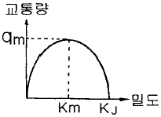
- q=μ1{-(KJ/2K}
- q=μf{K-(K2/KJ)}
- q=Km(μ1/KJ)
- q=qm{1-(Km/KJ)}
(정답률: 82%)
30. 다음 중 교통감응식 교통신호를 설치하기에 가장 적합하지 않는 곳은?
- 교통류의 변화가 심한 곳
- 일정한 수준의 횡단보행자가 있는 곳
- 복잡한 교차로
- 주도로와 부도로의 구별이 뚜렷한 곳
(정답률: 알수없음)
31. 다음의 각종 교통 측정에 대한 설명 중 틀린 것은?
- 현황조사 : 현재의 도로망, 대중교통노선, TCD, 주차시설 등 이와 유사한 요소들에 관한 기초자료를 얻기 위한 것이다.
- 실험조사 : 교통시스템이나 그 구성요소들의 어떤 물리적 특성을 평가하기 위해 실시한다.
- 관측조사 : 교통수요, 경제지표, 인구 및 토지이용의 변화 등 교통계획을 위한 여러 가지 요소들의 장기적인 추세를 알아내는 것이다.
- 면접조사 : 통행의 목적과 이 때 이용하는 교통수단에 관한 자료를 얻는 방법이다.
(정답률: 80%)
32. 일정시간 동안 특정지점을 통과한 차량의 산술평균 속도로서 속도분석, 교통사고분석에 이용되는 것은?
- 공간평균속도(space mean speed)
- 시간평균속도(time mean speed)
- 평균통행속도(mean travel speed)
- 설계속도(design speed)
(정답률: 91%)
33. 동일 차로 상의 장애물을 인지한 후 제동을 하여 정지하기 위해 필요한 길이는?
- 제동 시거
- 정지 시거
- 추월 시거
- 앞지르기 시거
(정답률: 91%)
34. 교통체계 관리기법(TSM)의 특성에 대한 설명 중 옳지 않은 것은?
- 단기적인 투자사업이다.
- 소규모 투자사업이다.
- 기존 시설물 활용보다 새로운 교통시설물을 건설한다.
- 교통요소 간의 유기적 연관성을 도모한다.
(정답률: 알수없음)
35. 다음의 신호설치의 편익에 대한 설명 중 틀린 것은?
- 질서정연한 흐름을 제공한다.
- 연속적인 흐름을 제공할 수 있다.
- 추돌사고가 감소한다.
- 교차하는 다른 보행자/차량 흐름을 위해 중 방향 흐름을 잠시 차단할 수 있다.
(정답률: 91%)
36. 시간별 교통량이 다음과 같을 때 첨두시간계수는(PHF)는?
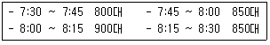
- 1.06
- 0.94
- 0.90
- 0.85
(정답률: 알수없음)
37. 자료 수집결과 도로상 교통류의 속도(V)와 밀도(k)의 관계가 V=50-0.25k로 밝혀졌다면 혼잡밀도(jam density)는? (단위 : V=km/시, k=대/km)
- 200대/km
- 2500대/km
- 100대/km
- 1250대/km
(정답률: 알수없음)
38. 어떤 도로상에서 시간당 평균 도착 교통량이 360대 일 경우, 20초 동안에 4대가 도착할 확률은?
- 0.135
- 0.271
- 0.⑤3
- 0.090
(정답률: 알수없음)
39. 도심지 통행제한 정책으로 적용되는 셀형(cell-type) 제한 방법에 관한 다음의 설명 중 타당하지 않는 것은?
- 소요사업비가 적다.
- 도심 통과통행을 감소시킨다.
- 도심지 교통체증을 완화시킨다.
- 도심의 순환도로가 필요치 않다.
(정답률: 알수없음)
40. 도시 및 교외 간선도로에서 도로의 서비스수준을 나타내는 효과 척도는?
- 교통량 대 용량비
- 자체도
- 평균통행속도
- 지체시간 백분율
(정답률: 알수없음)
3과목: 교통시설
41. 전지주차방법만 채용되고 차도폭은 작아도 되나 1대당 주차 소요면적이 최대인 주차형식은?
- 45° 주차
- 30° 주차
- 60° 주차
- 90° 주차
(정답률: 알수없음)
42. 교차로 설계의 기본 원칙이 아닌 것은?
- 두 교통류의 상대속도의 차를 최소화하고, 넓은 시야를 위하여 교차각은 직각에 가깝게 한다.
- 교통류처리의 효율성과 안전성을 위하여 교통류의 주종관계를 명확히 한다.
- 교차로의 면적은 안정된 궤적을 위하여 가능한 한 최대가 되도록 한다.
- 교차로 내 차량이동을 안정적으로 하기 위하여 차량의 유도로를 명확히 한다.
(정답률: 90%)
43. 다음 중 도류로의 폭을 결정하는데 필요한 요소와 가장 관계가 먼 것은?
- 설계기준차량
- 노면상태
- 평면곡선반경
- 도류로의 회전각
(정답률: 70%)
44. 다음은 중앙분리대의 기능을 설명한 것이다. 옳지 않은 것은?
- 유턴(U-Turn)을 용이하게 할 수 있어 교통류의 혼잡을 피할 수 있다.
- 도로표지, 기타 교통관제시설 등을 설치할 수 있는 장소로 제공된다.
- 광폭 분리대일 경우 사고 및 고장 차량이 정지할 수 있는 여유공간을 제공한다.
- 대향차로의 오인(悟忍)을 방지한다.
(정답률: 알수없음)
45. 교차로에 설치되는 횡단보도의 최소폭은?
- 2m
- 3m
- 4m
- 6m
(정답률: 알수없음)
46. 노면표시에 사용되는 색상의 설명으로 옳은 것은?
- 황색 : 반대방향의 교통류 분리
- 백색 : 교통섬의 윤곽선, 도로변의 정차금지표시
- 녹색 : 동일방향의 교통류 분리
- 적색 : 주로 규제를 뜻하며, 반대 노면의 분리
(정답률: 80%)
47. 설계속도 100km/h에 대한 최소평면곡선반경을 구한 값은? (단, 편경사 0.08, 마찰계수 0.25)
- 313m
- 245m
- 239m
- 213m
(정답률: 알수없음)
48. 완화곡선에 있어서 속도가 일정할 때 원심가속도 변화율과 파라메타는 어떠한 관계가 있는가?
- 원심가속도 변화율에 상관없이 파라메타는 일정하다.
- 원심가속도 변화율이 커지면 파라메타도 커진다.
- 원심가속도 변화율이 커지면 파라메타는 적어진다.
- 원심가속도 변화율에 상관없이 파라메타는 커지기도 하고, 적어지기도 한다.
(정답률: 70%)
49. 고속도로의 비상주차대의 일반적인 설치 간격으로 옳은 것은?
- 300m
- 500m
- 650m
- 750m
(정답률: 91%)
50. 다음의 평면곡선부의 편경사에 대한 설명 중 ()안에 알맞은 것은?
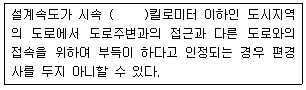
- 60
- 70
- 80
- 100
(정답률: 85%)
51. 우회전 차로 설치시 설치효과에 해당하지 않는 것은?
- 도로교통 용량을 증대시킨다.
- 보행자의 안전을 도모한다.
- 직진교통의 혼란이 감소된다.
- 정지선을 후퇴시킬 수 있다.
(정답률: 알수없음)
52. 다음 중 정지거리 산정시 영향을 미치는 요소와 가장 관계가 먼 것은?
- 반응시간
- 도로의 곡선반경
- 설계속도
- 마찰계수
(정답률: 알수없음)
53. 다음 그림의 A, B에 알맞은 말은?
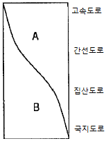
- A : 접근성, B : 이동성
- A : 이동성, B : 접근성
- A : 효율성, B : 이동성
- A : 접근성, B : 효율성
(정답률: 90%)
54. 어느 시외버스 터미널의 첨두시간의 버스 출발 횟수가 100대/시간, 승차대담 발차능력이 20분당 1대 일 때 필요한 승차대 수는?
- 34개소
- 66개소
- 88개소
- 100개소
(정답률: 알수없음)
55. 지방 지역에서의 인터체인지의 배치에 대한 기준이 옳지 않은 것은?
- 인터체인지 간격이 최소 1km, 최대 20km 이하가 되도록 배치
- 인터체인지 출입교통량이 30,000대/일 이하가 되도록 배치
- 인구 30,000명 이상의 도시 부근 또는 인터체인지 세력권 인구가 50,000~100,000명 정도가 되도록 배치
- 국도 등 주요 도로와의 교차 또는 접근 지점에 배치
(정답률: 알수없음)
56. 주차장의 설계기준자동차를 결정할 때 교려해야 할 사항에 대한 설명 중 옳지 않은 것은?
- 노면표시나 교통섬은 추후라도 변경이 가능하다는 사고를 갖는다.
- 주차장이 피크로 될 때에 가장 영향을 주는 차종을 설계기준 자동차로 한다.
- 설계기준 자동차에는 장래 자동차 치수의 변화를 고려해야 한다.
- 주차장의 공간을 효과적으로 이용하면서 질서 있는 주차를 기대하기 위하여 과대한 자동차를 설계기준 자동차로 사용하지 않는다.
(정답률: 알수없음)
57. 자주식 주차장으로서 지하식 또는 건축물식에 의한 노외주차장에는 바닥으로부터 85cm 높이에 있는 지점이 평균 몇 룩스 이상의 조도를 유지할 수 있는 조명장치를 설치하여야 하는가?
- 70
- 60
- 50
- 40
(정답률: 알수없음)
58. 다음 중 설계기준자동차의 최소 회전이 옳게 기술된 것은?
- 소형 자동차 : 5m, 대형 자동차 : 10m, 세미트레일러 : 2m
- 소형 자동차 : 6m, 대형 자동차 : 10m, 세미트레일러 : 12m
- 소형 자동차 : 6m, 대형 자동차 : 12m, 세미트레일러 :12m
- 소형 자동차 : 5m, 대형 자동차 : 8m, 세미트레일러 :12m
(정답률: 알수없음)
59. 고속도로의 경우 우측 길어깨(갓길)의 폭원이 얼마 미만일 경우 비상주차대를 설치해야 하는가?
- 2.5m
- 3.0m
- 3.5m
- 4.0m
(정답률: 73%)
60. 지방지역 고속도로의 평지 및 산지의 설계속도는 최소 얼마 이상으로 하는가?
- 산지 60km/h, 평지 80km/h
- 산지 80km/h, 평지 100km/h
- 산지 100km/h, 평지 120km/h
- 산지 120km/h, 평지 140km/h
(정답률: 알수없음)
4과목: 도시계획개론
61. E. Howard가 제안한 전원도시의 계획지침으로 적합하지 않은 것은?
- 인구규모를 3-5만으로 한다.
- 도시주변에 넓은 공업지대를 확보한다.
- 시가지에는 충분한 오픈 스페이스를 확보한다.
- 계획집행의 철저를 기하기 위해 토지를 공유화한다.
(정답률: 알수없음)
62. 격자형 도로망의 특징이 아닌 것은?
- 도로기능의 다양성이 결여되어 있다.
- 지형이 평탄한 도시에 적합하다.
- 고대 및 중세 봉건도시에서 흔히 볼 수 있다.
- 인구 100만 이상 대도시에 적합하다.
(정답률: 62%)
63. 라우리 모형(Lowry Model)의 적용에 있어서 공간구조를 분류하는 항목이 아닌 것은?
- 기반부문(Basic Sector)
- 상업부문(Service Sector)
- 가계부문(Household Sector)
- 환경부문(Environmental Sector)
(정답률: 알수없음)
64. 다음의 도시관리계획에 대한 설명 중 옳지 않은 것은?
- 지구단위계획을 입안하는 구역이 도심지에 위치하는 경우 기초조사, 환경성 검토 및 토지의 적성에 대한 평가를 반드시 실시하여야 한다.
- 도시관리계획은 광역도시계획 및 도시기본계획에 부합되어야 한다.
- 도시관리계획을 입안하는 때에는 도시관리계획도서와 이를 보조하는 계획설명서를 작성하여야 한다.
- 주민은 기반시설의 설치ㆍ정비 또는 개랑에 관한 사항에 대하여 도시관리계획을 입안할 수 있는 자에게 도시관리계획의 입안을 제안할 수 있다.
(정답률: 알수없음)
65. 다음의 각종 광장의 설치기준에 관한 설명 중 옳지 않은 것은?
- 역전광장은 혼잡한 주요도로의 교차지점에서 각종 차량과 보행자를 원활히 소통시키기 위하여 필요한 곳에 설치한다.
- 중심 대광장은 다수인의 집회ㆍ행사ㆍ사교 등을 위하여 필요한 경우에 설치한다.
- 근린광장은 주민의 사교ㆍ오락ㆍ휴식 등을 위하여 필요한 경우에 생활권별로 설치한다.
- 경관광장은 주민이 쉽게 접근할 수 있도록 하기 위하여 도로와 연결 시킨다.
(정답률: 알수없음)
66. 도시계획에 있어서의 계획인구를 산정하기 위한 방법 중에서 과거인구의 추세에 의한 예측방법이 아닌 것은?
- 로지스틱곡선법
- 최소자승법
- 등차급수법
- 비교유추법
(정답률: 37%)
67. 도시계획시설로서의 도로의 규모별 구분에 따른 기준과 가장 거리가 먼 것은?
- 소로1류 - 폭 10m 이상 12m 미만인 도로
- 중로1류 - 폭 15m 이상 20m 미만인 도로
- 대로1류 - 폭 35m 이상 40m 미만인 도로
- 광로1류 - 폭 70m 이상인 도로
(정답률: 알수없음)
68. 도시지역이 무질서하게 확산되는 현상을 무엇이라 하는가?
- 슬럼(slum)
- 스프롤(sprawl)
- 의존효과(dependence effect)
- 스태그 플레이션(stagflation)
(정답률: 알수없음)
69. 도시발전과 토지이용 패턴의 유형에서 동심원 이론을 처음 주장한 사람은?
- H.Hoyt
- C.D.Harris
- E.W.Burgess
- E.L.Ullman
(정답률: 알수없음)
70. 도시계획시설 중 국지도로에 대한 설명으로 가장 알맞은 것은?
- 도로로 둘러싸인 일단의 지역인 가구를 구획하는 도로
- 시ㆍ군 교통의 집산기능을 하는 도로로서 근린주거구역의 외곽을 형성하는 도로
- 근린주구의 교통을 보조간선도로에 연결하는 도로로서 근린주구구역의 내부를 구획하는 도로
- 보행자전용도로ㆍ자전거전용도로 등 자동차 외의 교통에 전용되는 고로
(정답률: 알수없음)
71. 터널통행료가 차선확장을 계기로 2,000원으로 1,000원 인상되었다. 현재 구간의 09:00~10:00 시간대 교통량은 20만대라면 인상 후 교통량은? (교통수요의 통행료가격 탄력성=-0.3)
- 110,000대/시
- 120,000대/시
- 130,000대/시
- 140,000대/시
(정답률: 알수없음)
72. 과거 두 시점의 국가경제ㆍ지역경제ㆍ산업구조를 분석하여 당해 지역의 어떤 산업이 건전하게 성장하는가 또는 성장할 것인가를 파악하는 방법은?
- 경제기반 분석
- 투입산출 분석
- 변이할당 분석
- 지역성장 모델
(정답률: 알수없음)
73. 다음 중 보행자도로에 대한 설명으로 맞지 않는 것은?
- 보행자의 안전과 자동차의 원활한 주행을 도모하기 위해서 보행자만의 교통에 제공되는 도로를 말한다.
- 보행자전용도로를 통하여 보행자를 자동차의 소음과 배기가스 등에서 보호할 수 있다.
- 보행자전용도로는 주거단지 내에서 발생하는 각종 생활동선의 수요를 충족시킨다.
- 보행자전용도로는 일반 도로를 통하여 인식되는 도시의 구조와 질서를 약화시킨다.
(정답률: 알수없음)
74. 다음 중 도시인구를 변화시키는 경제ㆍ사회ㆍ문화의 구성 요소들 사이에 존재하는 상호 인과관계를 방정식으로 표현하여 장래인구를 예측하는 수단으로 삼는 방법은?
- 정주모형에 의한 방법
- 집단생잔법
- 과거추세에 의한 방법
- 등비급수법
(정답률: 알수없음)
75. 주거지역의 도로율에 적합한 것은?
- 10% 이상 20% 미만
- 15% 이상 25% 미만
- 20% 이상 20% 미만
- 30% 이상 40% 미만
(정답률: 알수없음)
76. 다음 중 래드번(Radburn)과 가장 관계가 먼 것은?
- 슈퍼블록(superblock)
- 수직적인 보ㆍ차분리
- 쿨데삭(cul-de-sac)
- 라이트(H. Wright)와 스타인(C. Stein)
(정답률: 43%)
77. 아디케스(Adickss)법에 의하여 토지구획정리 사업을 실시한 나라는?
- 프랑스
- 독일
- 오스트리아
- 스위스
(정답률: 알수없음)
78. 경제, 사회, 문화적 특성을 살려 개성있는 지속 가능한 발전을 촉진하기 위해 생태, 정보통신, 과학, 문화, 관광 등 분야별로 행하는 도시계획 관련 사항은?
- 도시기본계획
- 시범도시지정
- 지구단위계획
- 도시계획 시설계획
(정답률: 알수없음)
79. 주택단지의 구성을 작은 단위에서 큰 단위로 알맞게 배열한 것은?
- 근린분구→근린주구→인보구
- 인보구→근린분구→근린주구
- 근린주구→근린분구→인보구
- 인보구→근린주구→근린분구
(정답률: 알수없음)
80. 도시지역 안에서 공공의 안녕질서와 도시기능의 증진을 위해서 필요하다고 인정할 때에는 지구의 지정을 도시관리계획으로 결정할 수 있는데 지구의 종류가 아닌 것은?
- 미관지구
- 고도지구
- 보존지구
- 재개발지구
(정답률: 알수없음)
5과목: 교통관계법규
81. 다음 중 지방도시 교통정책심의위원회의 업무범위 및 기능에 속하지 않는 것은?
- 중심도시 및 교통권역의 지정에 관한 사항
- 기본계획의 수립ㆍ변경 및 그 시행실적의 평가에 관한 사항
- 도시교통의 개선을 위한 명령의 실시계획 및 그 시행실적의 평가에 관한 사항
- 교통수요관리의 시행에 관한 사항
(정답률: 47%)
82. 고속도로에 전용차로를 설치할 수 있는 자는?
- 건설교통부장관
- 경찰청장
- 시장ㆍ군수
- 행정자치부장관
(정답률: 10%)
83. 다음 중 광역도시계획의 수립을 위한 기초조사 사항으로 잘못된 것은?
- 주택건설 촉진계획
- 풍수해ㆍ지진 그 밖의 재해의 발생현황 및 추이
- 기후ㆍ지형ㆍ자원ㆍ생태 등의 자연적 여건
- 기반시설 및 주거수준의 현황과 전망
(정답률: 알수없음)
84. 교통안전에 관한 시책의 기본을 규정함으로써 그 종합적 계획적인 추진을 도모하여 공공복리의 증진에 기여함을 목적으로 하는 법은?
- 도로교통법
- 자동차관리법
- 자동차운수사업법
- 교통안전법
(정답률: 알수없음)
85. 교통이 빈번한 도로에서 유아의 보호자는 그 유아만을 보행하게 하여서는 안된다고 규정되어 있는데 이 때 유아는 몇 세미만의 사람을 말하는가?
- 4세
- 5세
- 6세
- 7세
(정답률: 알수없음)
86. 도로의 관리청은 도로정비기본계획을 몇 년을 단위로 하여 수립하여야 하는가?
- 5년
- 10년
- 15년
- 20년
(정답률: 19%)
87. 도시기본계획에 포함되어야 할 정책방향이 아닌 것은?
- 지역적 특성 및 계획의 방향ㆍ목표에 관한 사항
- 공간구조, 생활권의 설정 및 인구의 배분에 관한 사항
- 토지의 이용, 개발에 관한 사항
- 도시시설의 용도변경에 관한 사항
(정답률: 알수없음)
88. 고속도로를 운행 중 자동차가 고장이 났을 때 고장차량 표지 설치 장소로서 옳은 것은?
- 그 자동차로부터 50m 이상의 뒤쪽도로상에
- 그 자동차로부터 60m 이상의 뒤쪽도로상에
- 그 자동차로부터 80m 이상의 뒤쪽도로상에
- 그 자동차로부터 100m 이상의 뒤쪽도로상에
(정답률: 알수없음)
89. 도로교통법상 안전표지의 종류가 아닌 것은?
- 주의 표지
- 위험 표지
- 보조 표지
- 지시 표지
(정답률: 알수없음)
90. 도로교통법상 앞지르기가 금지된 장소를 나열한 것이다. 옳은 것은?
- 횡단 보도, 교차로, 터널 안, 다리 위
- 비탈길의 고개 마루 부근, 가파른 비탈길의 내리막
- 도로의 구부러진 곳, 버스정류장 부근, 학교 앞
- 가파른 비탈길의 오르막, 안전지대가 설치된 곳
(정답률: 58%)
91. 도로에 관한 비용과 수익에 관련된 원칙이 아닌 것은?
- 비용부담의 원칙
- 원인자 부담금
- 손궤자 부담금
- 형평성의 원칙
(정답률: 알수없음)
92. 시설물의 부지 인근에 부설주차장을 설치하고자 할 때 부설주차장 설치계획서에 첨부할 서류 및 도면으로 옳지 않은 것은?
- 토지등기부등본
- 공사설계도서
- 시설물의 부지와 주차장 설치부지를 포함한 지역의 토지이용 상황을 판단할 수 있는 축적 1//1200 이상의 지형도
- 5명 이상의 인근주민 동의서
(정답률: 알수없음)
93. 도로의 구조ㆍ시설 기준에 관한 규칙에 규정된 도로의 횡단면을 구성하는 요소들에 대한 제원을 바르게 설명한 것은?
- 지방지역 고속도로 차로의 최소폭 : 3.5m
도시지역 일반도로 중앙분리대 최소폭 : 1.0m
도시지역 도속도로 오른쪽 길어깨의 최소폭 : 2.0m
도시지역 간선도로 보도의 최소폭 : 3.0m - 지방지역 고속도로 차로의 최소폭 : 3.0m
도시지역 일반도로 중앙분리대 최소폭 : 2.0m
도시지역 도속도로 오른쪽 길어깨의 최소폭 : 1.5m
도시지역 간선도로 보도의 최소폭 : 2.0m - 지방지역 고속도로 차로의 최소폭 : 3.5m
도시지역 일반도로 중앙분리대 최소폭 : 1.0m
도시지역 도속도로 오른쪽 길어깨의 최소폭 : 1.5m
도시지역 간선도로 보도의 최소폭 : 2.0m - 지방지역 고속도로 차로의 최소폭 : 3.0m
도시지역 일반도로 중앙분리대 최소폭 : 1.5m
도시지역 도속도로 오른쪽 길어깨의 최소폭 : 1.0m
도시지역 간선도로 보도의 최소폭 : 3.0m
(정답률: 55%)
94. 도로교통법에서 정의하는 자동차에 해당하지 않는 것은?
- 승용자동차
- 승합자동차
- 화물자동차
- 자전거
(정답률: 55%)
95. 도로표지의 설치기준으로 잘못된 것은?
- 도로이용자의 주의를 끌 수 있도록 뚜렷할 것
- 도로이용자가 가고자 하는 방향을 결정할 수 있는 거리에서 읽을 수 있는 크기일 것
- 설치방향은 차량의 진행방향과 평행인 방향에 설치하되, 도로형태와 설치방법에 따라 30° 이내의 안쪽에 설치할 것
- 글자ㆍ기호 및 바탕은 밤에도 잘 읽을 수 있도록 반사되어야 할 것
(정답률: 알수없음)
96. 주차장법에서 부설주차장의 설치대상시설물 중 관람장을 제외한 문화 및 집회시설인 경우 시설면적 몇 m2당 1대를 설치해야 하는가?
- 50m2
- 100m2
- 150m2
- 200m2
(정답률: 55%)
97. 다음 중 도시교통정비 촉진법의 목적과 가장 관계가 먼 것은?
- 교통시설의 정비 촉진
- 교통수단 및 교통체계를 효율적으로 운영ㆍ관리
- 도시교통의 원활한 소통
- 안전하고 신속한 교통을 확보
(정답률: 알수없음)
98. 도로의 구조에 대한 손궤, 미관의 보존 또는 교통에 대한 위험을 방지하기 위하여 도로경계선으로부터 20m를 초과하지 아니하는 범위 안에 지정할 수 있는 구역은?
- 접도구역
- 연도구역
- 보존구역
- 풍치구역
(정답률: 알수없음)
99. 지방도는 지방의 간선도로 망을 이루는 도로로서 관할 도지사가 노선을 지정하는데 이에 해당하지 않는 것은?
- 도청소재지로부터 시청 또는 군청소재지에 이르는 도로
- 시청 또는 군청소재지 상호간을 연결하는 도로
- 도시 내 주요지역이나 인근도시 및 주요 지방간을 연결하는 도로
- 도내의 비행장, 항만, 역 또는 이와 밀접한 관계가 있는 비행장, 항만 또는 역을 상호 연결하는 도로
(정답률: 알수없음)
100. 다음 중 주차장법의 목적에 해당되지 않는 것은?
- 정부의 재원확보
- 도시 내 자동차교통의 원활
- 공중의 편의도모
- 도시기능의 유지 및 증진
(정답률: 알수없음)
6과목: 교통안전
101. EPDO가 의미하는 것은?
- 등가사망사고
- 등가중상사고
- 등가경상사고
- 등가물피사고
(정답률: 82%)
102. 일반적인 교차로의 사고방지대책이 아닌 것은?
- 좌회전전용차로를 설치한다.
- 횡단보도와 정지선의 간격을 좁혀서 차량 통행시간을 줄인다.
- 입체분리 시설(육교 및 지하도)을 설치한다.
- 필요한 지점에 차량 및 보행자 신호기를 설치한다.
(정답률: 90%)
103. 과속방지시설은 차량의 통행속도를 얼마 이하로 제한할 필요가 있다고 인정되는 도로에 설치하는가?
- 20km/시
- 30km/시
- 40km/시
- 50km/시
(정답률: 알수없음)
104. 차도를 무단으로 건너는 보행자의 교통심리라 볼 수 없는 것은?
- 갈 길이 바쁘다.
- 멀리 돌아가기 싫다.
- 차량의 통행이 많은 곳이다.
- 내가 횡단할 때 자동차는 멈춘다.
(정답률: 알수없음)
1⑤. 자로를 이탈한 차량이 도로주변의 고정 장애물에 직접 충돌하는 것을 막기 위해 차량의 충돌 시 그 속도가 완만히 줄어들도록 하거나 충돌 후 그 방향이 전환되도록 고안된 교통안전시설은?
- 과속방지시설
- 시선유도표지
- 방호울타리
- 충격흡수시설
(정답률: 알수없음)
106. 제한된 시거로 인하여 교차로에서의 보행자사고가 많이 발생할 때의 일반적인 대책으로 적절하지 않는 것은?
- 시야장애물 제거
- 좌ㆍ우회전차로 설치
- 횡단보도 설치
- 다른 보도로의 유도
(정답률: 알수없음)
107. 고속도로의 사고율이 평균 이하인 도로의 특징과 가장 관계가 먼 것은?
- 넉넉한 도로폭
- 넓게 포장된 길어깨
- 연석의 설치
- 선형이 비교적 직선
(정답률: 92%)
108. 다음 중 자동차의 정지거리를 옳게 표시한 것은?
- 공주거리+실 제동거리
- (공주거리+실 제동거리)×2
- 공주거리-실 제동거리
- (공주거리-실 제동거리)×2
(정답률: 90%)
109. 운전하기 쉬운 도로를 바르게 기술한 것은?
- 약간의 요철이 있도록 한다.
- 등속도로 운전할 수 있도록 한다.
- 곡선반경을 짧게 한다.
- 외부자극은 없어야 한다.
(정답률: 알수없음)
110. 개선사업 시행 전 3년간의 연평균 사고건수가 10건이며, 연평균 ADT가 6,000대인 한 교차로에 사고감소율 20%인 교통안전 사업을 시행한 후 3년 동안에 예측되는 연평균 사고감소 건수는? (단, 이 교차로의 사업시행 후 3년 동안의 연평균 ADT는 7,000대로 예측된다.)
- 4.6건
- 2.3건
- 1.2건
- 5.9건
(정답률: 50%)
111. 같은 방향으로 움직이는(주로 같은 차로 내에서) 차량간의 충돌형태는?
- 추돌
- 측면충돌
- 후진충돌
- 직각충돌
(정답률: 82%)
112. 다음 주차방식 중 일반적으로 노상주차의 경우 사고율이 가장 낮은 것은?
- 평행주차
- 직각주차
- 60° 각도주차
- 30° 각도주차
(정답률: 알수없음)
113. 사고 지점도에 관한 다음의 설명 중 잘못된 것은?
- 사고가 집중적으로 발생하는 지점의 신속한 시각적 색인을 제공한다.
- 지점도는 사고건수 대신 희생자수를 나타내는 것이 일반적이다.
- 범례는 가능한 한 단순해야 한다.
- 사고 지점도는 통상 연 단위로 관리된다.
(정답률: 알수없음)
114. 한 운전자가 주행 중에 장애물은 만나 급제동하여 그 장애물 앞에서 가까스로 정지하였다. 이 때 바퀴에 의한 활주혼(skid mark)의 길이는 40m 이고 노면의 종방향 마찰계수는 0.6일 때 차량의 초기속도는?
- 약 56kph
- 약 62kph
- 약 67kph
- 약 78kph
(정답률: 알수없음)
115. 다음 중 가장 단순하고 가장 직접적인 접근이며, 소규모 도로망에 용이하게 사용할 수 있는 위험지점 선정기법은?
- 사고건수법
- 사고율법
- 사고건수-율법
- 율-품질관리법
(정답률: 91%)
116. 다음 중 도로구간에서의 통행량 1억대ㆍkm당 교통사고율을 바르게 표현한 것은?
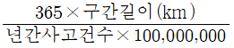
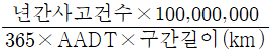
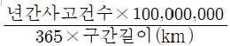
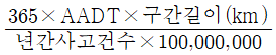
(정답률: 알수없음)
117. 다음 중 차량의 미끄럼 흔적에 대한 설명 중 틀린 것은?
- 양후륜의 미끄럼 흔적들 모두가 전륜의 미끄럼 흔적을 벗어나지 않으면 직선미끄럼으로 간주한다.
- 직선미끄럼 거리는 당해 차량의 모든 바퀴들의 미끄럼 흔적 중 가장 긴 미끄럼 길이로 한다.
- 두 개의 타이어를 가진 바퀴의 미끄럼 거리는 두 타이어의 미끄럼 흔적의 평균거리로 한다.
- 양후륜의 미끄럼 흔적들이 전륜의 미끄럼흔적의 어느 한쪽을 벗어나면 곡선의 미끄럼으로 간주한다.
(정답률: 알수없음)
118. 교통사고 조사의 일반원칙 사항으로 맞지 않는 것은?
- 신속한 조사를 행할 것
- 확고 부동한 사실을 파악할 것
- 가해자의 진술을 존중하고 인정할 것
- 주도면밀한 조사를 행할 것
(정답률: 100%)
119. 교통사고 방지를 위해 제한속도를 조정코자 할 때 조사된 표본의 누적분포상에서 몇 %에 해당 되는 속도를 제한 속도로 정하는 것이 합리적인가?
- 50%
- 75%
- 85%
- 95%
(정답률: 100%)
120. 80kph의 속도로 달리던 차량이 급제동하여 정지할 때의 평균최대감속도는? (단, 경사는 없으며 노면과 타이어의 마찰계수는 0.5이다.)
- 2.4m/sec2
- 3.1m/sec2
- 4.0m/sec2
- 4.9m/sec2
(정답률: 알수없음)